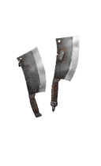
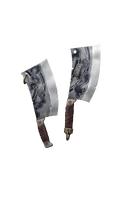
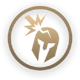
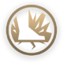

Мясник

Редкость: Epic
Пол: Male
Фракция: Dynasty
Энергия: Shadow
Класс: Easy
Добыча: Rift Keys and Chests
| Название | Редкость | Изображение |
|---|---|---|
| Всадник Темной Пустоши | Редкий |  |
| Демон-паникёр | Сезонный |  |
| Хан Пепельных Берегов | Сезонный |  |
| Опытный головорез | Сезонный |  |
| Интендант Осы | Редкий |  |
| Демон Гнева | Обычный |  |
| Название | Редкость | Изображение |
|---|---|---|
| Железный век | Обычный |  |
| Измельчители книг | Редкий |  |
| Кливерс | Обычный |  |
| Гранд Кливерс | Обычный |  |
| Приспешники чревоугодия | Эпический |  |
| Жнецы скорби | Редкий |  |
| Слайсеры | Обычный |  |
| Надежные чопперы | Обычный |  |
| Недействительное исполнение | Редкий |  |
| Название | Описание | Изображение |
|---|---|---|
| Демон Хук | Удачный бросок Крюка дает Мяснику большое количество теневой энергии. |  |
| Расчленение | Последний удар специальной атаки наносит больший урон и сбивает противника с ног. | |
| Плоть Демона | Продолжительность существования формы тени увеличена. |  |
| Садист | Если у вашего противника менее 30% здоровья, успешная тяжелая атака Мясника мгновенно его победит. |  |
| Скотобойня | Мясник наносит противнику дополнительный урон, ударяя его о стены клетки. | |
| Крюк Гнева | После успешного броска крюка следующая атака тесаком прорвет блок. |  |
| Горнило Демона | Стены Клетки кажутся сближенными. |  |
| Свежая туша | Если у Мясника менее 30% здоровья, он восстанавливает его при успешных атаках. |  |
| Дрожь | Мощная атака, прыжки и стены клетки вызывают землетрясение. |  |
| Отчаяние | Внутри клетки Мясник получает гораздо меньше урона, и его поражение не может быть смертельным. | |
| Судьба Жажды | Успешные атаки дают дополнительную теневую энергию героям вашей команды. |  |
| Судьба безжалостности | У героев вашей команды увеличен урон от дальних атак. |  |